Корпус 214 × 165 × 185 мм · 8 печатных панелей + мелочь · 10 винтов снаружи, все снизу
Ревизия проекта 53a5b6d · 19.11.2026
Предварительная версия по компоновке. Детали ещё не прорабатывались
(пазы, рёбра, фаски, точные посадки). Размеры с пометкой TODO-ЗАМЕР — заглушки до замеров
(список в конце). Знаком ‡ отмечены узлы, которые появятся на этапе деталей.
Содержание
Как устроен корпус
Печатные детали
Крепёж, электроника, инструменты
Печать
Угол обзора экрана
Шаг 1 — Вплавить латунные вставки (18 шт.)
Шаг 2 — Рамка экрана
Шаг 3 — Экран CrowPanel
Шаг 4 — Клавиши
Шаг 5 — Термопринтер
Шаг 6 — Задняя стенка
Шаг 7 — Дно и внутренности
Шаг 8 — Передняя панель → на дно
Шаг 9 — Задняя стенка → на дно
Шаг 10 — Проводка
Шаг 11 — Проверка перед закрытием
Шаг 12 — Колпак
Шаг 13 — Бумага и первое включение
Разборка и обслуживание, все винты
Приложение: замеры TODO, неполадки
1. Как устроен корпус
Корпус собирается из четырёх узлов. Каждый узел ставится на дно и крепится к нему
винтами снизу. Сбоку, спереди, сзади и сверху винтов нет.
Узел
Из чего
Чем крепится
Дно
плита 4 мм + бортик жёсткости 6 мм по краю + ножки; на ней XL4015, PCF8574, камера динамика
—
Передняя панель
одна деталь + рамка; на ней экран, клавиши, принтер
3 винта снизу (П1–П3)
Задняя стенка
панель; на ней выключатель и ввод кабеля
3 винта снизу (З1–З3)
Колпак
бока + крыша одной деталью
4 винта снизу (К1–К4)
Верх передней панели и задней стенки держится колпаком: на панелях по два Г-образных язычка,
они входят в пазы под крышей. Язычки вертикальные, поэтому колпак надевается и снимается строго вверх.
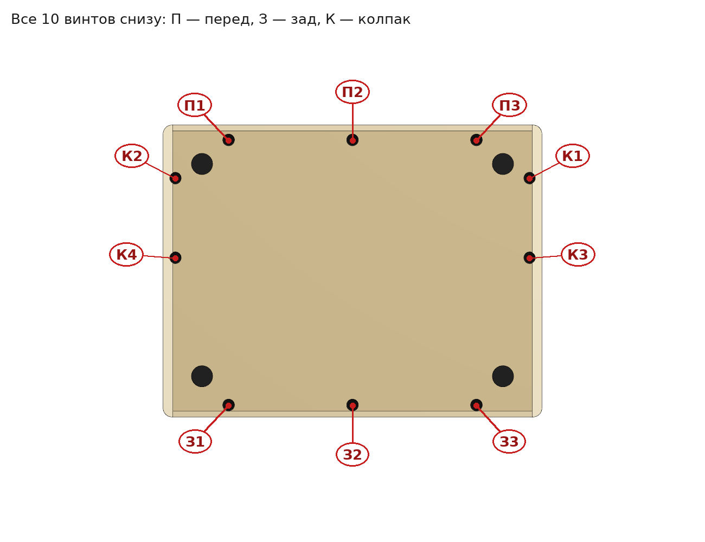
Все 10 винтов — снизу
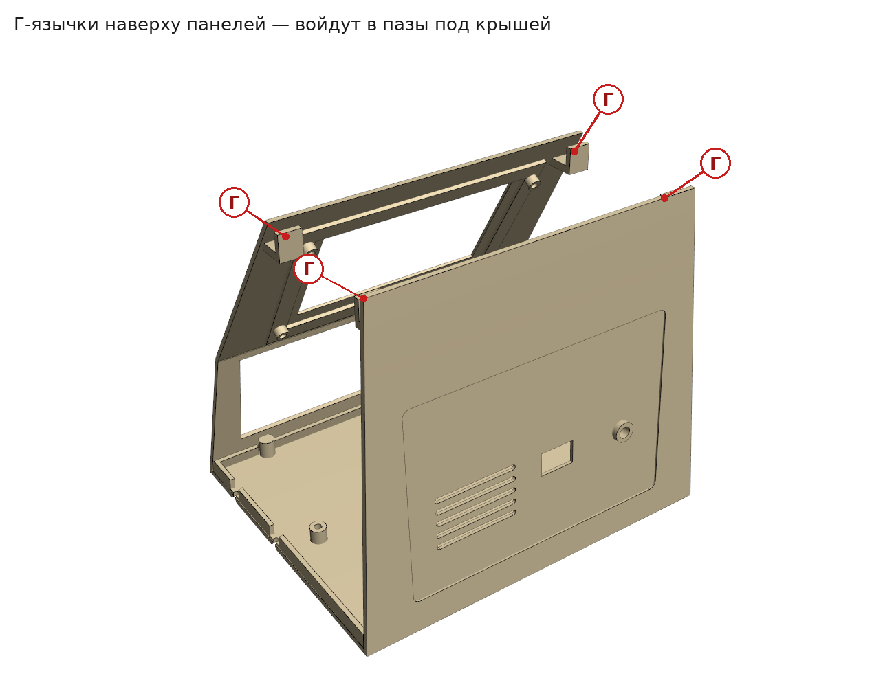
Г-язычки на панелях
Ручка в крыше — проём 100 × 34 мм глубиной 24 мм с поднутрением 9 мм под передней кромкой:
пальцы заходят вниз и вперёд под кромку (4.5 мм) и тянут вверх. Колпак держится на дне 4 винтами во вставках —
переносить можно за ручку.
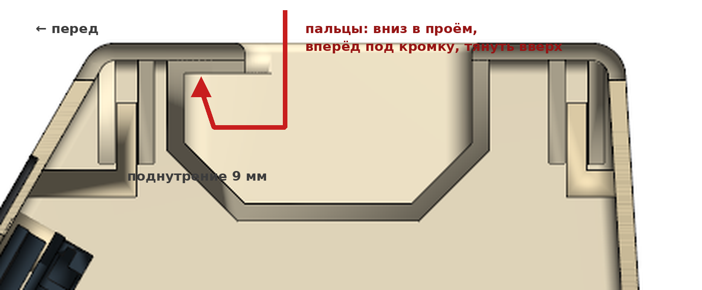
Разрез ручки
Снял 4 винта К1–К4 и колпак — вся электроника на месте и подключена: можно прошивать (USB-C),
менять карту TF, крутить подстроечник XL4015.
2. Печатные детали
Файлы — в out/stl/, уже повёрнуты в ориентацию печати и стоят на столе.
Колпак и передняя панель печатаются целиком — без клеевых швов (нужен стол ≥ 216 × 167 и высота ≥ 188 мм).
Деталь
Файл
Шт
Габарит на столе
Цвет
Ориентация
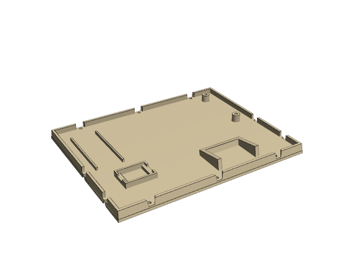
Дно (4 мм + бортик жёсткости)
taro_base.stl
1
203 × 158 × 12 мм
бежевый
низом вниз, бортик вверх
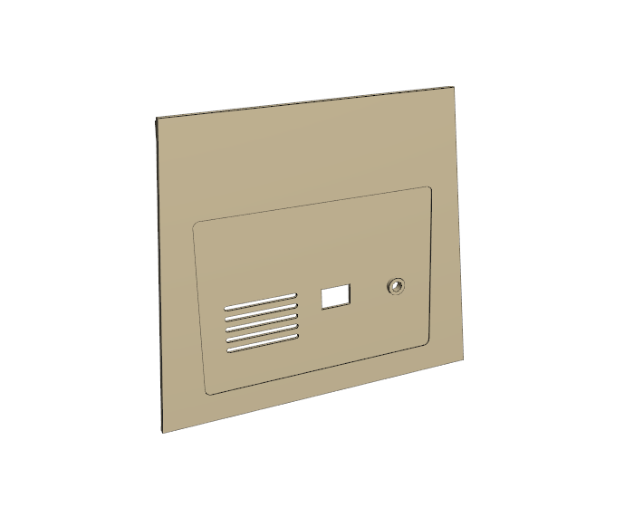
Задняя стенка
taro_rear.stl
1
203 × 20 × 180 мм
бежевый
стоя, как в сборке (втулка ввода снаружи мешает класть плашмя); кайма 8 мм
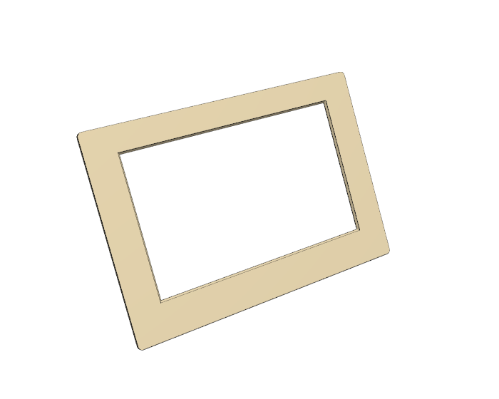
Рамка экрана
taro_screen_bezel.stl
1
140 × 96 × 3 мм
тёмно-серый
лицом вниз
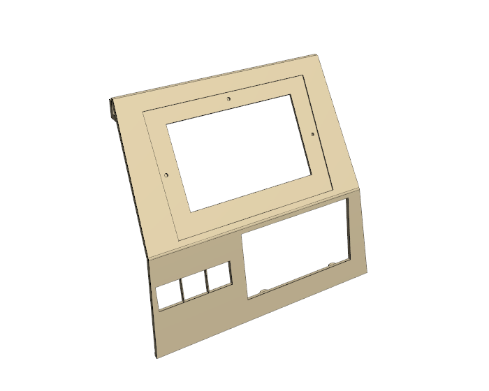
Передняя панель целиком
taro_front.stl
1
203 × 81 × 180 мм
бежевый
стоя, как в сборке; кайма 8 мм
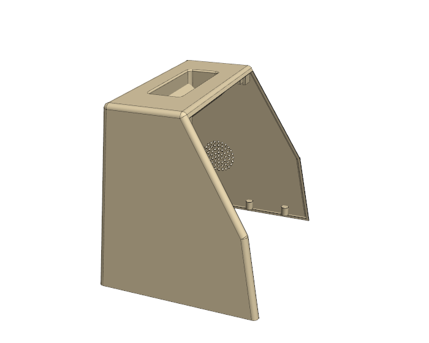
Колпак целиком (бока + крыша)
taro_cover.stl
1
214 × 165 × 185 мм
бежевый
крышей вниз; под ручкой мост ≈ 25 мм (фаски 45°), поддержки не нужны
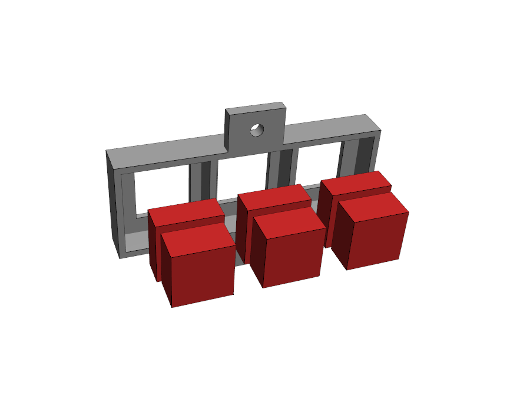
Пластина клавиш (1.5 мм + рёбра, 2 ушка)
taro_key_plate.stl
1
68 × 46 × 8 мм
любой
рёбрами и ушками вниз
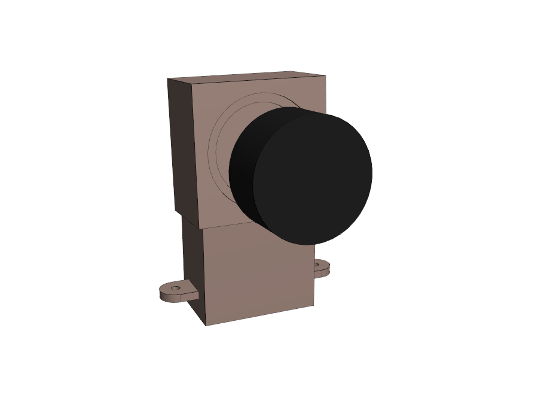
Камера динамика (закрытая, ≈ 46 мл)
taro_speaker_box.stl
1
33 × 70 × 88 мм
любой
на подставке, как в сборке; лицевая стенка — мост 24 мм
—
Колпачок клавиши: одна карта
taro_keycap_1_one_card.stl + _SYMBOL.stl
1
19 × 19 × 9 мм
тёмно-серый + светлый символ
верхом вниз; _SYMBOL — вторым цветом (импортировать вместе как одну деталь)
—
Колпачок клавиши: три карты
taro_keycap_2_three_cards.stl + _SYMBOL.stl
1
19 × 19 × 9 мм
тёмно-серый + светлый символ
верхом вниз; _SYMBOL — вторым цветом (импортировать вместе как одну деталь)
—
Колпачок клавиши: «?»
taro_keycap_3_question.stl + _SYMBOL.stl
1
19 × 19 × 9 мм
тёмно-серый + светлый символ
верхом вниз; _SYMBOL — вторым цветом (импортировать вместе как одну деталь)
—
Скоба-хомут кабеля
‡ позже
1
≈ 24 × 10 мм
любой
плашмя
‡ — деталь ещё не спроектирована (этап деталей / ждёт замера).
Если стол меньше: печать из частей
Колпак и передняя панель целиком требуют стол ≥ 216 × 167 мм и высоту ≥ 188 мм. Если не влезает —
TARO_PRINT_WHOLE=0, файлы в out/stl_split/. Склеивать на глаз не нужно: на деталях
есть направляющие, детали встают только в одно положение.
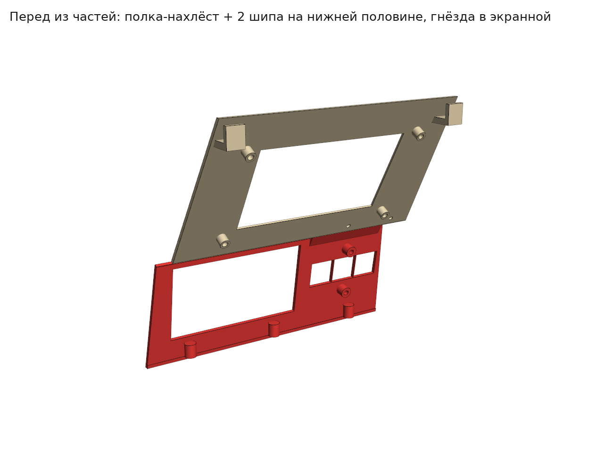
Перед: полка-нахлёст и шипы на нижней половине
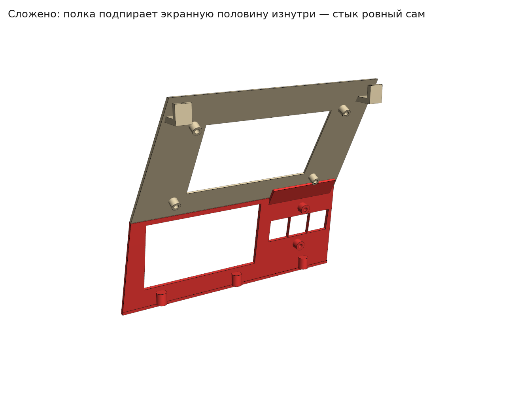
Сложено — полка подпирает экранную половину
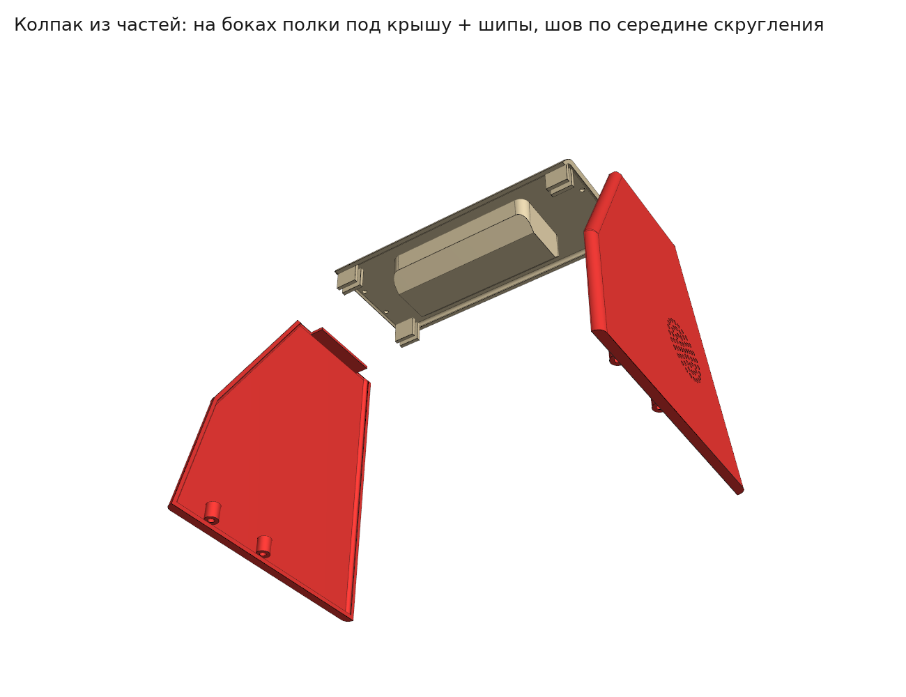
Колпак: полки с шипами на боках под крышу, шов по середине скругления
Над принтером полки нет: верх корпуса принтера в 3 мм под перегибом. Там стык держит клей, а
положение задаёт полка слева и рамка принтера, перекрывающая шов снаружи.
3. Крепёж и расходники
Что
Шт
Куда
Винт M3×10 потай DIN 7991 (шестигранник 2 мм)
10
дно → передняя панель (3), задняя стенка (3), колпак (4)
Винт M3×6 полукруглая ISO 7380 (шестигранник 2 мм)
220 × 220 × 250 мм (TODO подтвердить). Самая большая деталь — колпак 214 × 165 × 185 мм крышей вниз
Посадочные зазоры
0.25 мм на сторону
Отверстия под вставки
ø4.0 мм, глубина 6.7 мм
Кайма
на дне, боках и задней стенке — 5 мм (большие плоские детали тянет по углам)
Передняя панель и задняя стенка печатаются стоя (высокие тонкие детали) — кайма 8 мм, скорость
внешних периметров ниже. Колпак — крышей вниз: дно ручки — мост ≈ 25 мм благодаря фаскам 45° (поддержки не нужны;
если принтер плохо держит мосты — поддержка только под ручкой). Колпачки — верхом вниз, символ вторым цветом первыми 3 слоями.
Проверка после печати
Сложите все панели «насухо» без клея и винтов — стыки должны сходиться без щелей > 0.5 мм.
Снимите облой с кромок шва наждачкой 240, не скругляя кромку.
Прогоните отверстия ø3.4 в дне сверлом 3.4 мм вручную, потай — зенковкой или сверлом 8 мм на пару оборотов.
Угол обзора экрана
Грань экрана наклонена на 30° от вертикали (в исходном плане было 10–15°). TN-матрицу лучше всего
видно по нормали; при наклоне 30° взгляд сидящего человека почти совпадает с нормалью, стоящего — 18°.
При 12° было бы 18° и 36° соответственно. Корпус ниже плана (185 вместо 200 мм) — это тоже в плюс: экран смотрят сверху.
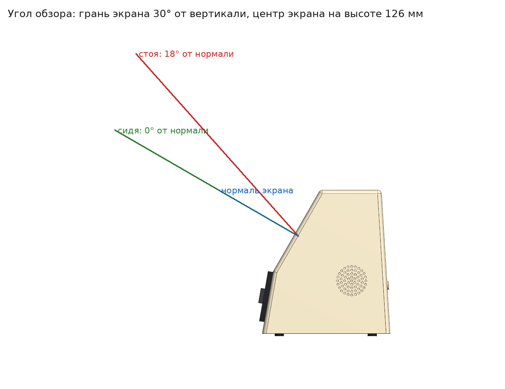
Линии взгляда: сидя (глаза 430 мм над столом, 480 мм от корпуса) и стоя (650 / 420 мм)
Какая сторона обзора у матрицы «хорошая» — проверяется на живой плате (SCR_ROT_180):
поставьте экран под 30° и посмотрите сверху. Если хуже, чем перевёрнутый — плату разворачиваем на 180°.
После остывания вкрутите в каждую вставку винт на пару оборотов — проверка резьбы.
2Рамка экрана
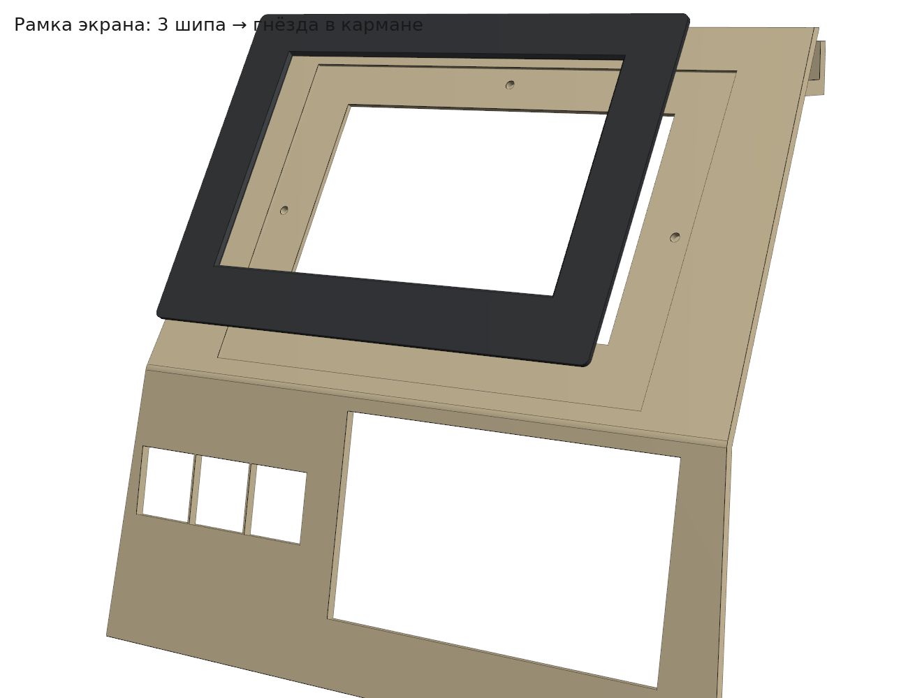
Шипы рамки → гнёзда кармана
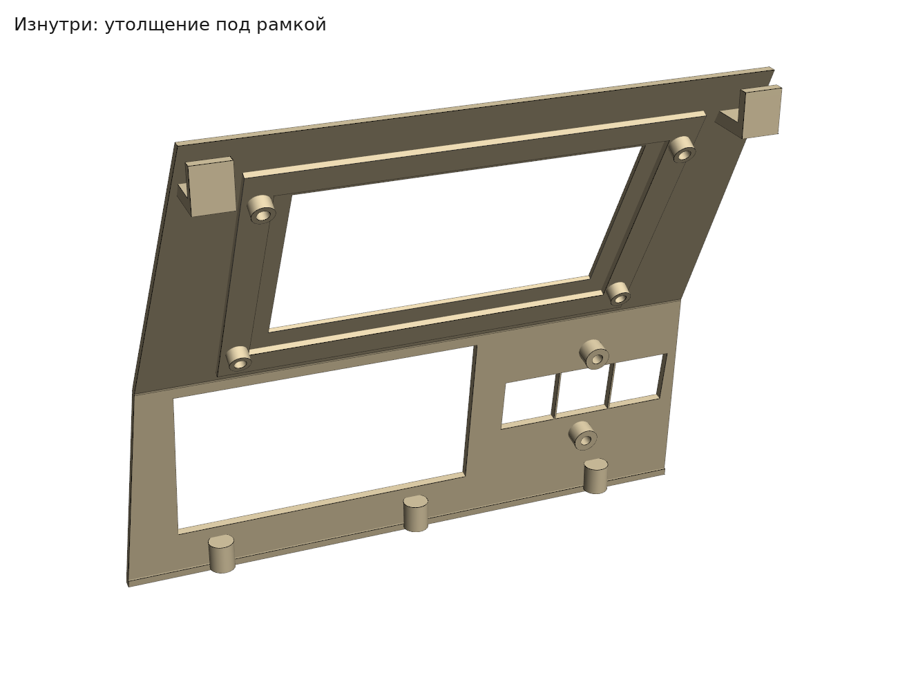
Изнутри: утолщение под гнёзда
На тыле рамки 3 шипа, в дне кармана экранной грани — 3 гнезда. Один шип сверху по центру, два по бокам — рамка встаёт только в одно положение, вверх ногами не войдёт.
Вставьте рамку шипами в гнёзда и прижмите: она встаёт заподлицо с панелью, окно — ровно по активной области экрана. Ничего выставлять на глаз не нужно.
Если туго — пройдите кромки кармана наждачкой (зазор по проекту 0.25 мм на сторону).
Капля циакрина в каждое гнездо — и прижать на 30 с. Изнутри рамку дополнительно поджимает стекло экрана.
3Экран CrowPanel
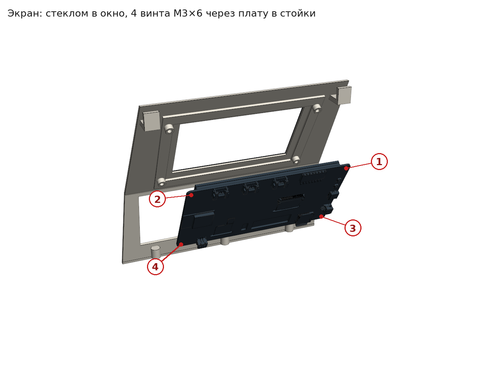
Плату — со стороны тыла, 4 винта
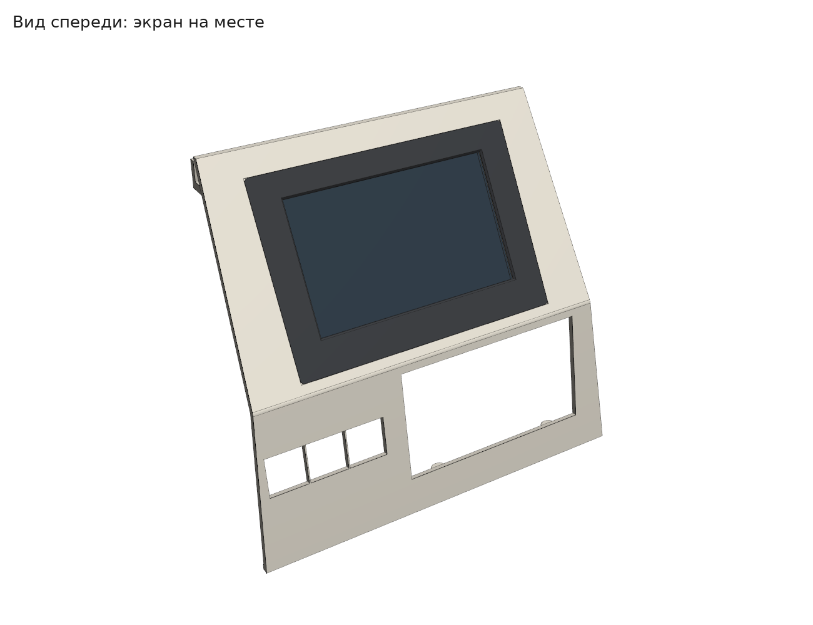
Вид спереди
⚠ Не перетягивайте винты экрана: TN-матрица даёт цветные пятна при изгибе.
Снимите транспортную плёнку со стекла непосредственно перед установкой, протрите внутреннюю сторону окна.
Разъём USB-C — слева (если смотреть спереди), разъёмы HY2.0 и слот TF — сверху. До установки проверьте на живой плате «хорошую» сторону обзора TN (SCR_ROT_180) — если хуже, плату нужно развернуть на 180°, и модель перестраивается.
Слева от USB-C оставлено 20 мм под прямой штекер под пайку и изгиб провода.
Опустите плату стеклом в окно, отверстия платы — на стойки 4–7.
Закрутите 4 винта M3×6 полукруглая ISO 7380 (шестигранник 2 мм) через плату в стойки. Затягивайте крест-накрест, без усилия — стекло не должно прогибаться.
Проверьте спереди: активная область ровно в окне, засветки по краям нет.
4Клавиши
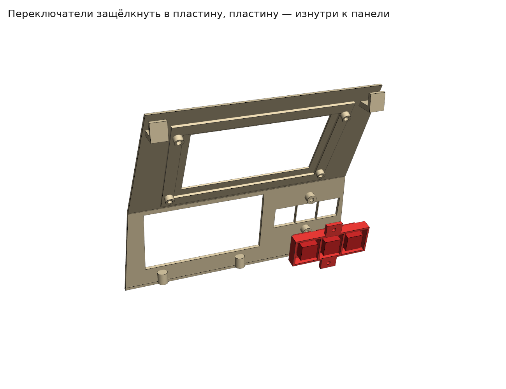
Пластина изнутри
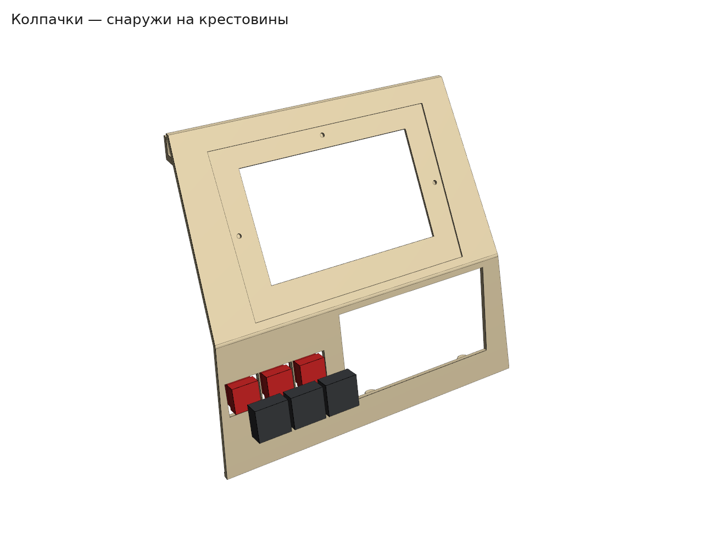
Колпачки снаружи
Припаяйте к каждой клавише 2 провода по 20 см (26 AWG) до установки — потом неудобно.
Защёлкните 3 переключателя в пластину сверху, до щелчка, все — одинаково (контакты в одну сторону).
Приложите пластину изнутри к передней панели: корпуса переключателей входят в окна, ушки пластины (сверху и снизу) ложатся на 2 бобышки панели.
Закрепите 2 винтами M3×8 во вставки бобышек. Рёбра на тыле пластины не дают ей прогибаться при нажатии.
Снаружи наденьте колпачки: одна карта — слева, три карты — в центре, «?» — справа. Крестовина входит с усилием, нажать до упора.
5Термопринтер
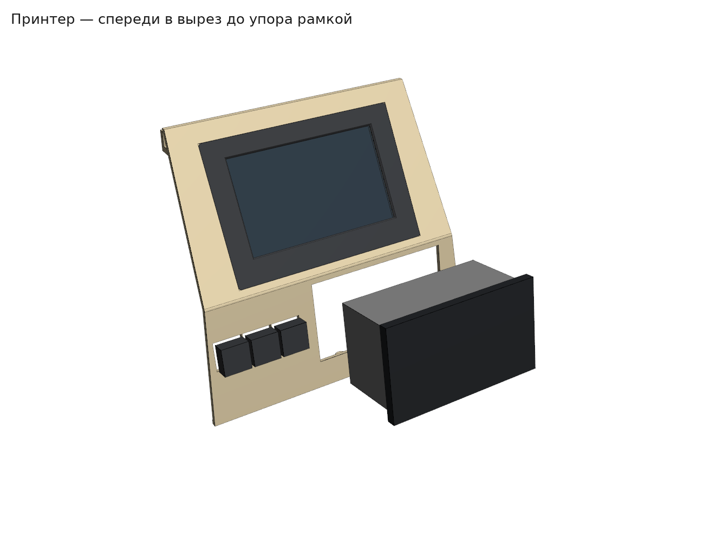
Спереди в вырез
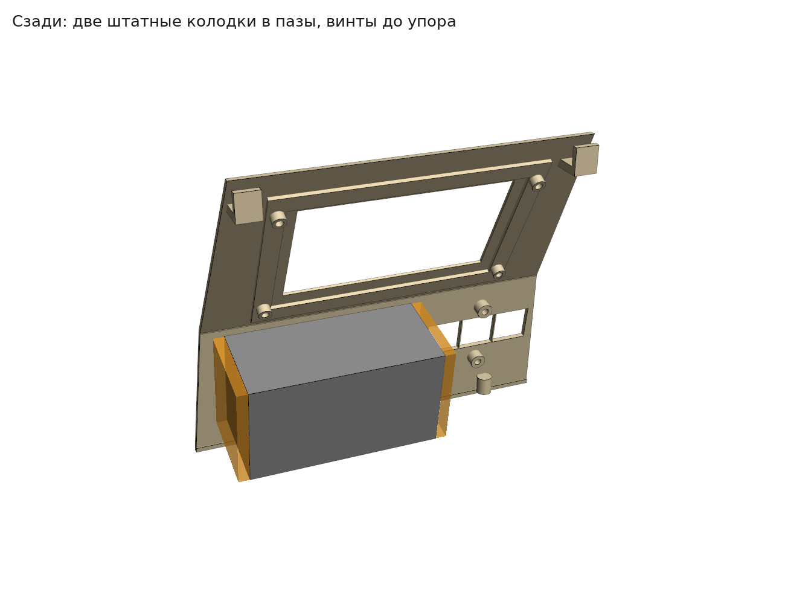
Колодки сзади
⚠ Принтер ставьте до установки передней панели на дно — тогда к винтам колодок сзади есть прямой доступ. Колодки по мануалу выступают за корпус ≤ 4 мм; в модели оставлено 6 мм — проверить на пришедшем принтере.
Подсоедините к принтеру кабели заранее — сзади мало места: J3 питание (1 VH, 2 GND) и TTL.
TTL по мануалу CSN-A2 (плата USB/TTL, CN4): 1 +3.3 В — не подключать, 2 TXD (выход принтера), 3 RXD (вход), 4 GND. Нам нужны только RXD и GND. У 3-пиновых разъёмов нумерация другая — сверьтесь с шелкографией платы.
Вставьте принтер спереди в вырез 103.3 × 57.3 мм до упора лицевой рамкой (панель здесь 2.6 мм, принтер допускает 1–6 мм).
Сзади наденьте две штатные V-образные колодки на продольные пазы по бокам корпуса принтера (на половине высоты) и сдвиньте вперёд до панели.
Закрутите винты колодок отвёрткой сзади, вдоль оси принтера — винты упираются в тыл панели. Равномерно с двух сторон.
Проверьте: крышка лотка свободно откидывается вверх и ни за что не цепляется.
6Задняя стенка
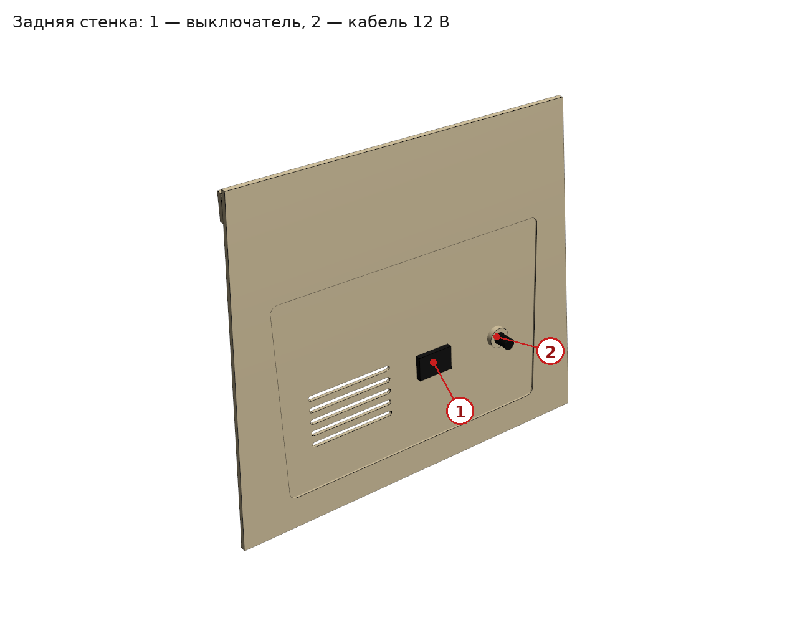
⚠ Разгрузка кабеля обязательна: без неё рывок оторвёт пайку на выключателе.
Выключатель KCD1-11 вставьте снаружи в прямоугольный вырез до щелчка защёлок. Положение «I» — вверху.
Кабель 12 В пропустите снаружи через втулку ввода, внутри оставьте запас 25 см.
Пока нет хомута ‡ — завяжите на кабеле изнутри узел или затяните стяжку вплотную к втулке.
Плюс кабеля — на контакт 1 выключателя (пайка или клемма 4.8 мм, термоусадка).
⚠ Не подключайте экран к XL4015, пока не проверили 5.1 В мультиметром — 12 В сожгут плату.
Наклейте 4 ножки снизу (н1–н4).
Настройте XL4015 до установки: подайте на вход 12 В, мультиметр на выход, подстроечником выставьте 5.10 В. Отключите.
Посадите XL4015 на термоклей на площадку слева сзади; подстроечник — к открытой стороне.
PCF8574 — на 2 стойки, 2 самореза M2.5×6.
Камера динамика: провода динамика проденьте в отверстие ø2.5 на задней стенке камеры, динамик положите ободом в посадку на лицевой стенке (магнит уходит внутрь), обод — по кругу термоклеем или герметиком: камера должна быть герметичной. Отверстие с проводами залейте термоклеем.
Наклейте на обод динамика кольцо поролона 2 мм.
Поставьте камеру лицом к правой стенке, ушки — на 2 бобышки дна, 2 винта M3×8 (Д1–Д2).
8Передняя панель → на дно
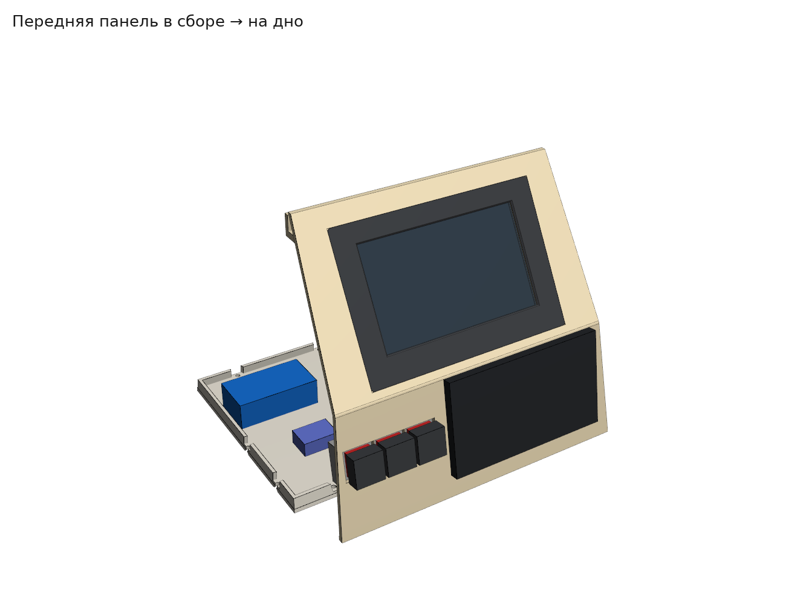
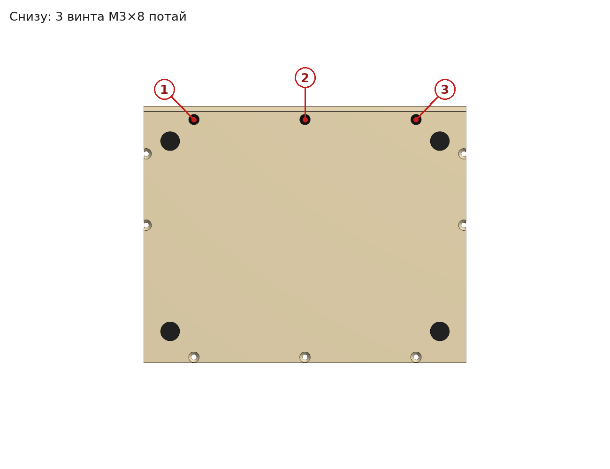
Снизу: П1–П3
Поставьте собранную переднюю панель на переднюю кромку дна; бобышки П1–П3 — над отверстиями.
Переверните сборку на бок (подложите полотенце, экран не царапать).
Вкрутите снизу 3 винта M3×10 потай DIN 7991 (шестигранник 2 мм) — головки должны утонуть заподлицо с дном.
9Задняя стенка → на дно
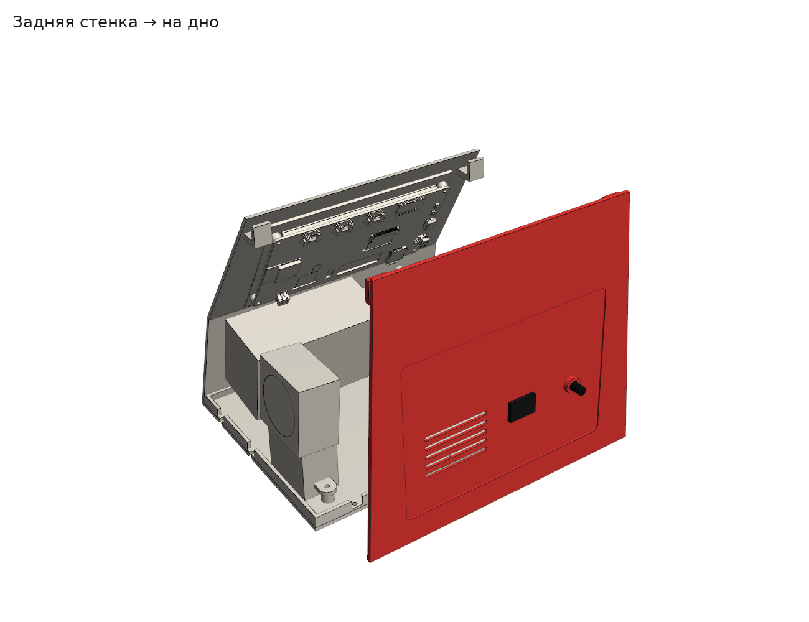
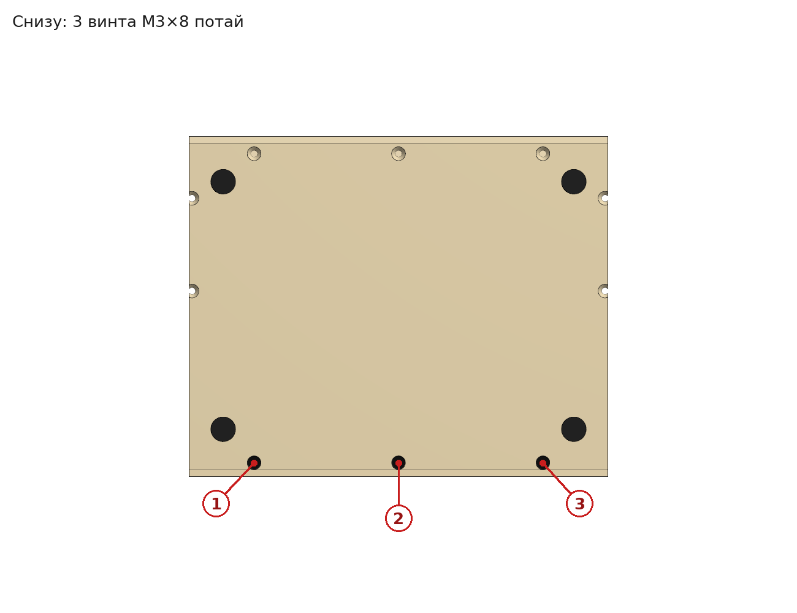
Снизу: З1–З3
Поставьте заднюю стенку на заднюю кромку дна, бобышки З1–З3 — над отверстиями.
Снизу 3 винта M3×10 потай DIN 7991 (шестигранник 2 мм).
10Проводка
Откуда
Куда
Примечание
Кабель БП 12 В (+)
KCD1-11, контакт 1
через ввод в задней стенке, под хомутом
KCD1-11, контакт 2
XL4015 IN+ и принтер POWER (+12 В)
звезда от выключателя, 22 AWG
Кабель БП 12 В (−)
XL4015 IN− и принтер POWER GND
XL4015 OUT+ / OUT− (5.1 В)
штекер USB-C под пайку → разъём USB-C CrowPanel
только USB-C. Пины BAT не трогать: это вход Li-ion 3.7–4.2 В через зарядку
CrowPanel GPIO_D: GPIO38 (UART1 TX)
Принтер TTL, контакт 2 (RX)
один сигнальный провод
CrowPanel GPIO_D: GND
Принтер TTL: GND
TX принтера не подключать
CrowPanel I²C (HY2.0)
PCF8574: гребёнка SDA/SCL/VCC/GND
Crowtail → DuPont из комплекта
PCF8574 P0 / P1 / P2
клавиши «одна карта» / «три карты» / «?»
второй вывод каждой клавиши → GND
CrowPanel SPK
динамик 3 Вт
2-пин; второй 2-пин разъём на плате — BAT, не путать
Сначала силовые 12 В (красное): выключатель → XL4015 и принтер.
Включите, ещё раз проверьте 5.1 В на выходе XL4015, выключите. Только потом — штекер USB-C в экран.
Принтер: GPIO_D → GPIO38 на RX принтера (контакт 2 TTL) + GND. TX принтера не подключать. Не UART0: там логи загрузчика и прошивка — принтер печатал бы мусор при каждом включении.